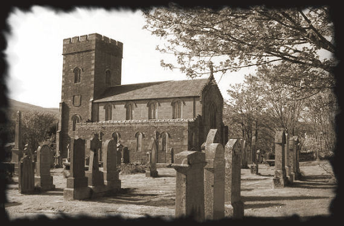
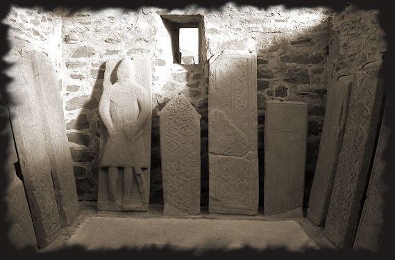
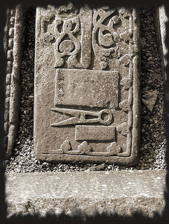
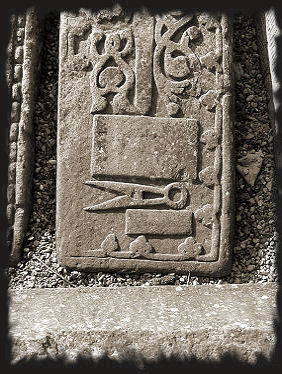

From the Templar warrior monks to lay freemason brothers...
Was freemasonry born in Scotland? Is it descended from the initiatory line of the Templars who took refuge here after the grievous day of October 13th 1307? Did Robert the Bruce welcome the Knights Templar to take advantage of a military science that would lead him to victory at Bannockburn and subsequent independence?
Maybe the answers to these questions can be found in the chapel at Kilmartin, with its astonishing alignment of templar tombstones, representing knights, boats from the templar fleet, death masks or simply swords engraved into the stone (characteristic of Templar tombs). The most startling fact is that they are also decorated with Masonic symbols, such as squares and compasses.
Numerous templar tombstones from Argyll are brought together in the Kilmartin graveyard.

They prove that the Order of the Temple survived in Scotland after 1312, the year in which it was officially dissolved.

The Order was first hidden and secularised, before giving birth to freemasonry. 
